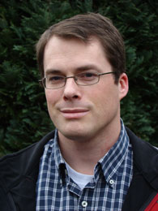

I am Bart Kastermans, currently a sr. data scientist at ADGOJI in Amsterdam, the Netherlands.
In 2006 I received a PhD in Mathematics at the University of Michigan, Ann Arbor. After that I was a postdoc at the University of Wisconsin, Madison, and then an Assistant Professor at the University of Colorado, Boulder.
My mathematical work has been in Set Theory (almost disjoint type families) and Computability theory (effective randomness and reverse mathematics).
You can also find me at the following places:
Email: kasterma@kasterma.net